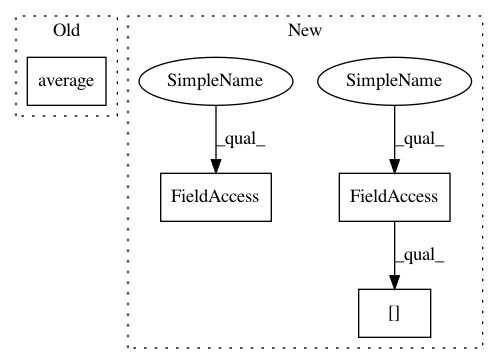

61570406a54b612908b37f4028cd47df4a70781a,batchflow/models/metrics/regression.py,RegressionMetrics,r2_score,#RegressionMetrics#,109
Before Change
def r2_score(self):
r2_score
numerator = (self.predictions - self.targets) ** 2
denominator = (self.targets - np.average(self.targets)) ** 2
return np.mean(1 - (numerator / denominator))
def explained_variance_ratio(self):
After Change
def r2_score(self):
r2_score
if self.weights is not None:
weight = self.weights[:, np.newaxis]
else:
weight = 1
numerator = (weight * (self.predictions - self.targets) ** 2).sum(axis=0)
targets_avg = np.average(self.targets, axis=0, weights=self.weights)
In pattern: SUPERPATTERN
Frequency: 3
Non-data size: 4
Instances
Project Name: analysiscenter/batchflow
Commit Name: 61570406a54b612908b37f4028cd47df4a70781a
Time: 2019-08-30
Author: nikita_007_94@mail.ru
File Name: batchflow/models/metrics/regression.py
Class Name: RegressionMetrics
Method Name: r2_score
Project Name: analysiscenter/batchflow
Commit Name: 61570406a54b612908b37f4028cd47df4a70781a
Time: 2019-08-30
Author: nikita_007_94@mail.ru
File Name: batchflow/models/metrics/regression.py
Class Name: RegressionMetrics
Method Name: r2_score
Project Name: deepchem/deepchem
Commit Name: 315b642d518741b2927fc5a4cfc8765bff51610e
Time: 2017-08-17
Author: peastman@stanford.edu
File Name: examples/low_data/toxcast_maml.py
Class Name:
Method Name: compute_loss
Project Name: elfi-dev/elfi
Commit Name: 4f8303192c4652261dc72707ad8c56d1a100cd87
Time: 2016-11-11
Author: henri.vuollekoski@helsinki.fi
File Name: elfi/smc_abc.py
Class Name: SMC
Method Name: infer